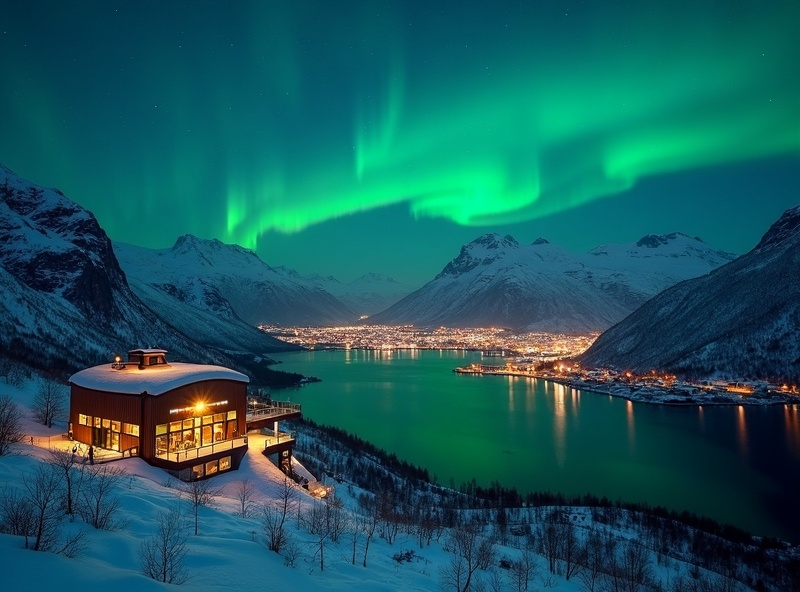
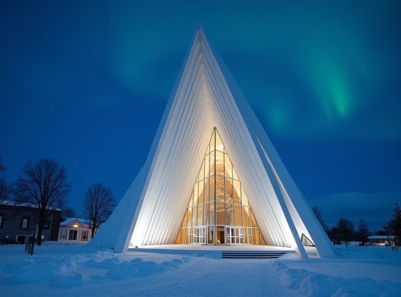
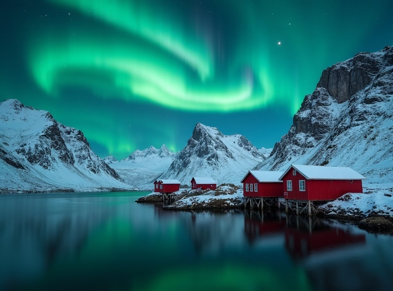

峽灣海上追光獨特體驗
挪威峽灣的獨特地貌，讓極光同時出現在天頂和海面倒影中，雙重視覺衝擊。
OVERVIEW
挪威，峽灣王國與極光之都特羅姆瑟的所在地。當極光在峽灣上空舒展時，海面平靜如鏡，天與水之間同時出現兩道極光 — 這是挪威特有的雙重極光奇景。從奧斯陸的北歐設計美學到特羅姆瑟的極地探險體驗，挪威是一場穿越風景與光的旅程。
挪威峽灣的獨特地貌，讓極光同時出現在天頂和海面倒影中，雙重視覺衝擊。
被譽為「北極之門」，餐飲住宿選擇豐富，是極光旅行中最有都市便利感的基地。
挪威峽灣郵輪路線成熟，乘坐郵輪在暖和的船艙內追極光，是最舒適的選擇。
深入北歐最後的游牧民族，在薩米人的帳篷裡聽極光傳說、吃馴鹿燉肉。
MUST VISIT

景點 1
乘坐纜車登上 Storsteinen 山頂，海拔 421 米，360 度俯瞰特羅姆瑟群島與峽灣全景。冬季夜晚這裡是追極光的熱門制高點，城市燈光加上極光構成一幅奇幻畫面。

景點 2
特羅姆瑟最具代表性的建築，由 11 座白色三角拱形構成，外觀像一座冰山或極光簾幕。極光之夜，教堂的彩色玻璃和天空的極光互相呼應，絕美動人。

景點 3
山峰從北冰洋直插而出，紅色漁民小屋散落在峽灣邊。冬季的羅弗敦是極光攝影師的秘密基地 — 山海交錯的構圖讓極光照片充滿戲劇性張力。
9 月～隔年 3 月
北大西洋暖流影響，冬季西部沿海相對溫和但潮濕。特羅姆瑟冬季 -5°C ~ 2°C
特羅姆瑟冬季白天約 -2°C ~ 2°C，夜間 -7°C ~ -2°C
TRAVELER STORIES
「在特羅姆瑟的峽灣郵輪上追極光，是我這趟旅程最正確的決定。隔天爬上纜車也看到極光大爆發，挪威的風景層次讓極光變得立體。」
「本以為挪威只適合夏天去峽灣，沒想到冬天更美。薩米文化村的體驗非常深刻，在帳篷裡喝熱莓果汁聽極光傳說，太浪漫了。」